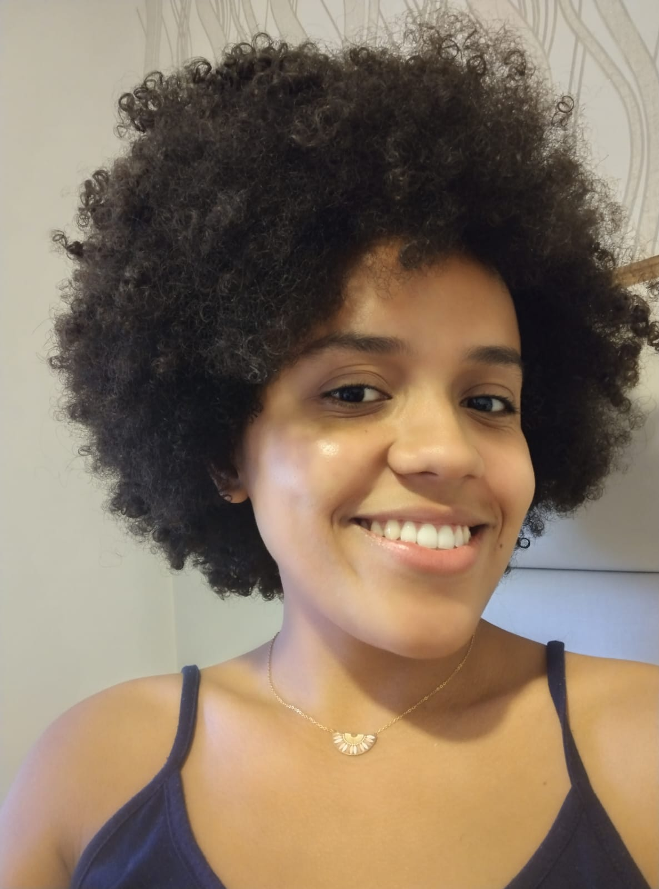

Formação e Experiência
- 2018-2024: Bacharelado de Ciência da Computação na Unicamp.
- 2019-2022: Iniciação científica no ramo de IoT, com publicações no IEEE e em periódico acadêmico.
- 2022: Estágio no CNPEM, atuando com computação de alto desempenho e paralelização de processos.
- 2022-2024: Duplo diploma na Télécom SudParis (França) em Engenharia de Computação e Mestrado, com ênfase em Arquitetura de Serviços Distribuídos.
- 2024: Estágio na Amadeus em Nice, com o projeto de otimizar os serviços de ingestão de dados da plataforma da empresa.
- 2024: Ingresso no Mestrado de Ciência da Computação na Unicamp.

Habilidades Técnicas
- Programação: Python, C, Java, JavaScript, Golang, C++, C#, Kotlin, React.
- Redes e IoT: LoRa, Simuladores, Digital Twins.
- Cloud e Big Data: Kafka, Azure.
- HPC: Cuda, Open MPI.
Projetos Públicos no Github
Publicações
- “On the Simulation of LoRaWAN Networks: A Focus on Reproducible Parameter Configuration”.
Computer Networks and Communications, 2(1), 148–171, doi: 10.37256/cnc.2120244496.
- “LoRaWAN Infrastructure for Urban Waste Management: A Simulation Study”.
IEEE 9th World Forum on Internet of Things (WF-IoT), doi: 10.1109/WF-IoT58464.2023.10539568..
Idiomas
Proficiente em inglês com certificação em Cambridge (CAE) e TOEIC level C1.
Francês intermediário: Lê bem, entende bem, fala regular e (por ora) escrita ruim.
Motivação
Aprender sobre novas tecnologias e suas constantes atualizações, além do desejo de aplicar a tecnologia no meio social, de forma a aprimorar o conhecimento e o cotidiano de todos.